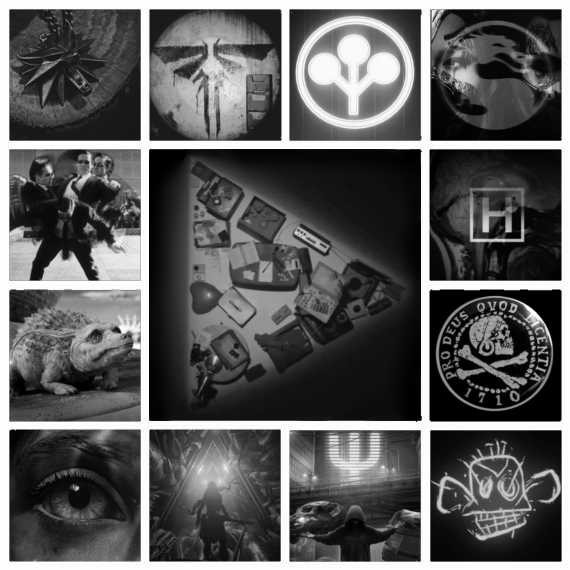

Я
18.03 | 18 лет | Melancholic | 4w5 | sp4 so5 so9
- В первую очередь собеседник, с которым тебе никогда не будет скучно. Кар! Мне характерно что-то тупое вкинуть и радостно убежать, сверкая пятками.
- Учусь в строительном колледже, с последующим «повышением» на архитектора. Истинная чертила.
- Редко, но метко отвечаю. Чаще всего торчу в публичных чатах, пушта соц.батарейка низкая. Шучу.. плохо. Но иногда это и вправду смешно!
- Не понимаю намёков. Люблю, когда пишут всё прямо и не держат проблемы в себе. Главное в меру, я вам не мусорный бак и не личный психолог.
- 80% моё состояние — грустинка. Если я не хочу чего-то говорить — не надо меня упрашивать. Я 100% сп4, мне надо просто переварить самой проблемы, и я вернусь к вам свежая и хорошенькая.
- Любите рандомные факты, шутки, пикчи с надписью «мы»? Это ко мне!!!
- Отношусь ко всем дружелюбно, даже к табуреткам. Главное не начните мне говорить, что кто-то круче, а кто-то хуже. Нейтрально отношусь к трансам. Сама иногда юзаю слюры и дико шучу про евреев.
- Я даркшиппер... ненавижу реальную чернь по типу инцестов, педо/зоо и т.д, но мои любимые пейринги это шаркбомб и ДжоЭлли (оба относятся к псевдо-инцестам), так что к пейрингам вымышленных персонажей такого типа я нормально отношусь.
А ещё? Ну.. ничего.. наверное..
А ещё у меня косичка почти метровая.. ну.. вдруг это кому-то интересно..
А вообще, я:
- Делаю и тестирую ИИ ботов
- Гарант на торговых площадках
- Рисую, пишу, ролю
Мои фандомы

Игры
- The Witcher
- Mortal Kombat
- Cyberpunk 2077
- The Last of Us
- Arcane + LOL
- Horizon
Кино
- Американские фильмы + Люка Бессона
- The Matrix
- Dr. House
- Pixar & Disney animation
Мой кинн-лист
- Gregory House Dr. House
- Silco Arcane
- Joel Miller The Last of Us
- Blu Rio
- Aurora League of Legends
Тонкий лёд
- Люди с неоместоимениями (мне будет очень тяжело с вами общаться из-за трудности обращения)
- Пишущие "ау?", "забей", если им тут же не ответили
- Нет общих интересов
- Просто общаетесь на отъебись и пропадаете на действительно долгие сроки без причин и etc.
Ну и всё как бы, я даже с кроссовком могу закентиться, вщ похую.
DNI
- Ебанаты, поддерживающие нацизм, фашизм
- Селфхармщики
- Поддерживающие педо/зоо/другие -филии
- Толерашки
- Агрессивная сторона ЛГБТК+
- Люди с нейроотличиями, которые были самодиагностированы с помощью левых тестов из интернета или тиктока (если у вас есть более веские аргументы — базару ноль, сходить к специалисту в наших реалиях это поистине дорогое удовольствие)
Поймите одну вещь: я не ебу в 100% случаях кто вы, что вы за человек и с кем ебётесь, поэтому без объяснений я ливаю из диалога. Отвечаю я редко, о людях в интернете... особенно в лс... я тупо забываю :( Поэтому если я пропала, то это может значить, что я конкретно к вам уже не приду, либо (если отвечаю не спустя сутки, а шустрее поддержки роблокса) вы мне очень нравитесь, но я забываю ответить. Пинайте смело во второй раз. Можно и в третий...